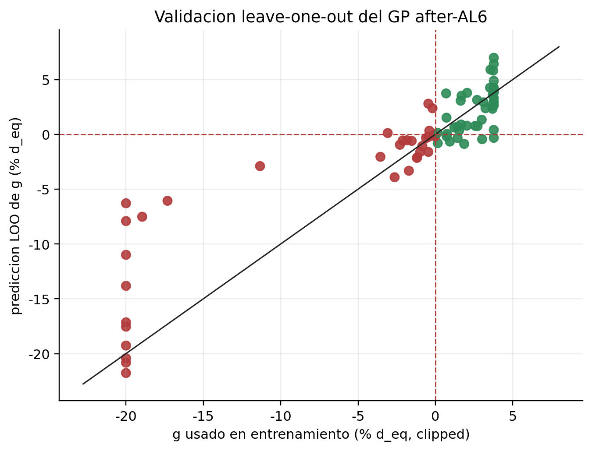
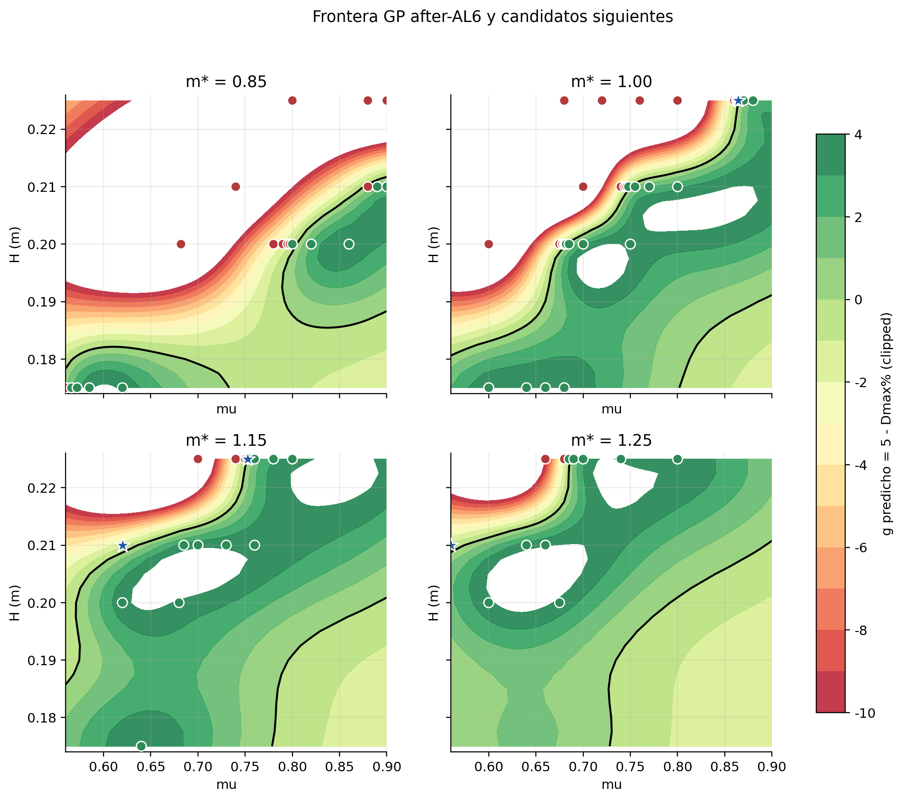
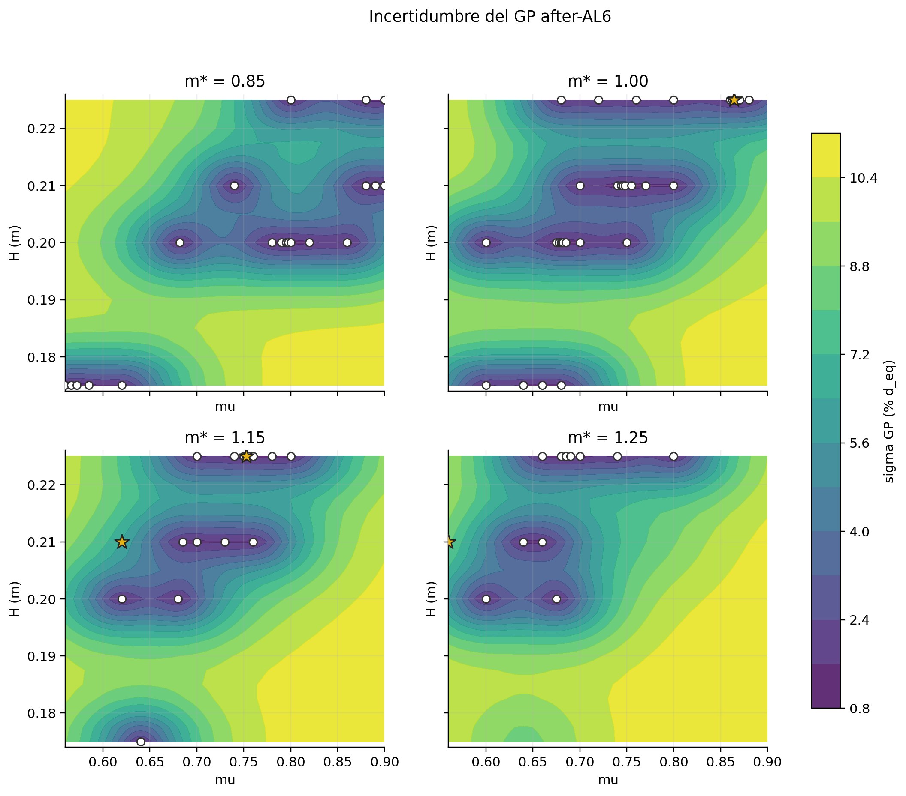
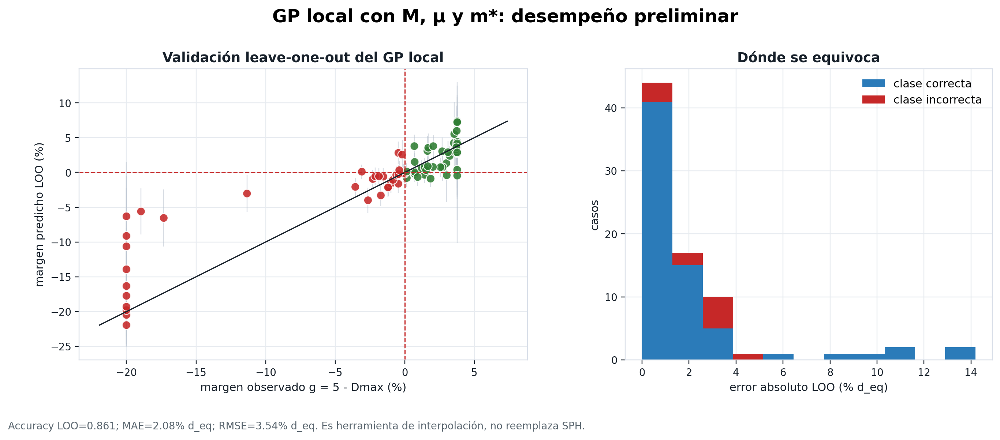

Modelo GP: frontera, incertidumbre y active learning
El modelo GP estima el margen de estabilidad g = 5 - Dmax. Valores positivos indican margen estable; valores negativos indican movimiento sobre el umbral. Su función es interpolar entre simulaciones SPH y elegir nuevos casos informativos, no reemplazar la evidencia numérica.
Estado del modelo
- Casos usados
- 79 base H_dam, μ, m*
- Clases
- 46 ESTABLE / 33 FALLO entrenamiento
- Accuracy LOO
- 0.861 validación cruzada
- MAE LOO
- 2.08% d_eq margen
- RMSE LOO
- 3.50% d_eq margen
- GP local
- 0.861 accuracy LOO con M
Qué predice
Predice el margen al umbral, no solo una etiqueta binaria. Eso permite distinguir casos claramente estables, casos claramente fallidos y casos cercanos a la frontera.
Qué significa la incertidumbre
La desviación estándar del GP muestra dónde el modelo tiene menos respaldo local. El active learning prioriza zonas cercanas a la frontera y/o con incertidumbre alta.
Modelo base con H_dam, μ y m*
Este es el modelo que guió la campaña de active learning hasta AL6. Usa la altura dam-break como generador del flujo, el coeficiente de fricción y la masa relativa del bloque.




Migración hacia variables locales
La versión local reemplaza H_dam por la solicitación hidráulica incidente M = rho max_t[h(t)u_x(t)^2], medida antes del bloque. Esto acerca el modelo a variables transferibles para una ecuación final.

La lectura local depende de la caracterización hidráulica 14/14. El detalle de gauges y de la definición de M está en Hidráulica local.
Lectura metodológica
Uso correcto
El GP resume la frontera y orienta nuevas simulaciones. En zonas bien cubiertas, interpola el margen de estabilidad y permite evaluar sensibilidad por fricción, masa y solicitación hidráulica.
Límite
La clasificación final de un caso sigue viniendo de SPH. El GP entrega una superficie estimada con incertidumbre; por eso los brackets, los checks finos y la validación externa siguen siendo necesarios.